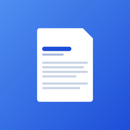

A native desktop editor for résumés and cover letters, with an AI coding agent built into the terminal — it can read, edit, and version your documents directly.
File sidebar, multi-tab Markdown editor, live preview, and a terminal — all in one resizable layout.
A real terminal wired into your workspace, with one-click presets to launch an AI agent and a slash-command guide for structured tasks.
A guided view for quick edits, or a full file-tree view for browsing the raw workspace like any other project.
Live Markdown preview with one-click PDF and DOCX export, plus git-backed version history.
.dmg and drag Résumé Studio into Applications.This is standard for any app distributed outside the Mac App Store without a paid developer account — it's not specific to this app, and it's a one-time step.
.exe. You'll see a blue "Windows protected your PC" screen.Same caveat as macOS — this is a limitation of self-distributing outside an app store without a paid signing certificate, not a bug in the app itself.